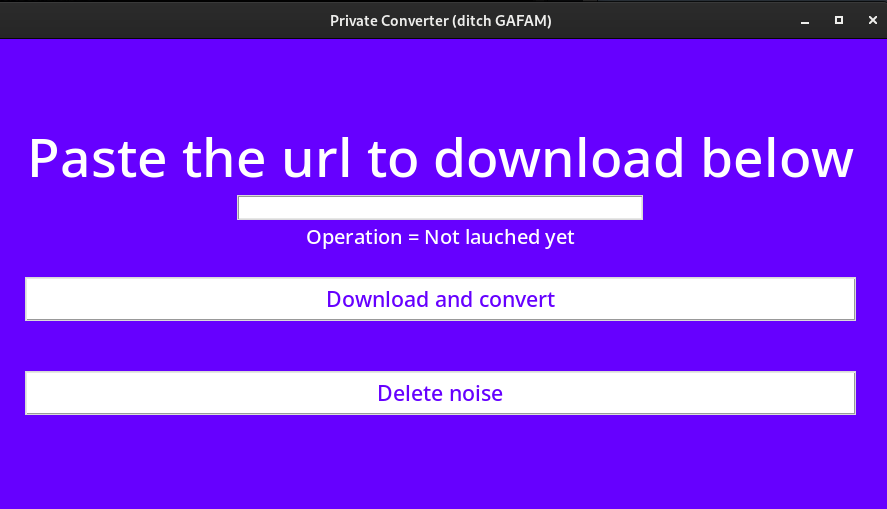

This is a short explanation of how to use this Python script to download Youtube videos and convert them into mp3 with the help of a user interface. The idea is that you run this script while scrolling on Youtube videos and copy-paste the URL of each video you find interesting as you go.
1. Python3+ and needed packages installed
First you need to have Python installed (Python 3). How to install it is beyond the scope of this post but you can find information there .
Once installed, you need to have a few packages installed. To install them, launch your terminal and run these commands
pip install youtube_dl
pip install tkinter
2. Download the youtube converter Python script
Once the installation of Python and packages is done, you can download the script "youtube_app.py" there on your Desktop.
Click on "Code" on the Github page, and select "Download ZIP"
Extract the zip and in the extracted folder, you will find the file "youtube_app.py". Cut and paste it on your Desktop.
3. Run the program
Ok, we are almost done.Select the file "youtube_app.py" and drop it on your terminal, this should write the whole file path on your terminal. Then, type "python " (mind the space after python) before the complete path. The line should look similarly (depending on your OS and path structure):
python /User/Desktop/youtube_app.py
Congrats, the program just started! You should see the user interface appearing with a green background. Alright, so now, very simple, just copy the url of the Youtube video you want to download&convert and paste it in the white rectangle, click the 'download and convert' button. That's it, now check your Desktop, the mp3 file should be there. Also maybe a .webm file, you can delete it.
Edit1: Some Youtube videos won't download. If so, try closing your terminal and running the program again. Make sure you're not messing up with the terminal path (play around with the pwd/cd commands to check it before running the script).
Edit2: Google is frequently changing the code for accessing videos on YouTube. So if you got a Signature error, simply update youtube-dl (pip install --upgrade youtube-dl), close your terminal and start the program again.